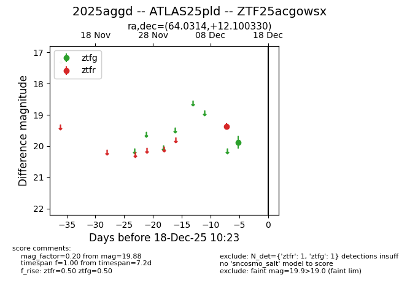
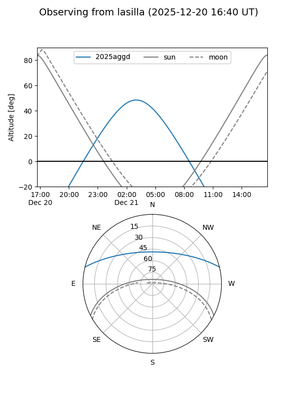
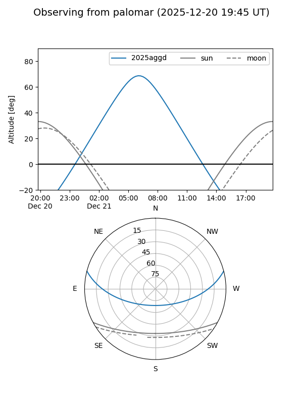

2025aggd
Target 2025aggd at 2025-12-18 11:18
Aliases and brokers:
FINK: fink-portal.org/ZTF25acgowsx
Lasair: lasair-ztf.lsst.ac.uk/objects/ZTF25acgowsx
ALeRCE: alerce.online/object/ZTF25acgowsx
TNS: wis-tns.org/object/2025aggd
YSE: ziggy.ucolick.org/yse/transient_detail/2025aggd
alt names
ZTF25acgowsx (ztf,fink_ztf)
2025aggd (tns,yse)
ATLAS25pld (atlas)
Coordinates:
equatorial (ra, dec) = 64.0314,+12.10033
equatorial (HMS+DMS) = 04:16:07.53,+12:06:01.19
galactic (l, b) = (181.4690,-26.74542)
Photometry
last ztfg=19.88, ztfr=19.37
1 ztfg, 1 ztfr detections
Lightcurve

Visibility


Additional plots